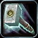

Classes › Paladin
 Paladin in WoW Forever
Paladin in WoW Forever
The WoW Forever Paladin trees at launch, following Blizzard's Nov 2 development notes. Switch to Beta to compare with the October beta trees.
Paladin talent calculator Race picker
Starter builds
Retribution leveling
Seal of Command, Vengeance and Unsealed Wrath for fast kills; Holy for Strength, better Seals and Divine Favor.
Split 20 / 0 / 31 · level-by-level order →
EndgameHoly healer
Illumination, Holy Shock and Light's Vigil for raid healing; Protection for Intellect and Templar's Bulwark.
Split 31 / 20 / 0 · level-by-level order →
LevelingShockadin (Holy/Retribution)
Holy Shock, Illumination and Divine Strength with a Retribution splash for Seal of Command and Sanctified Judgement. Opinion build, not benchmarked.
Split 30 / 0 / 21 · level-by-level order →
EndgameProtection tank
Redoubt, Anticipation, Reckoning and Holy Shield for block and threat, finishing with Shieldsworn; Holy points for Divine Strength and Improved Seals. Opinion build, not benchmarked.
Split 14 / 37 / 0 · level-by-level order →
Best race for each Paladin spec
Top-scoring race from our racial scores: Horde first, Alliance below. Open the race picker for the full ranking and why.
| Spec | Leveling | Dungeons & raids | PvP |
|---|---|---|---|
| Holy healer | Undead Dwarf | Undead Human | Undead Human |
| Shockadin | Undead Dwarf | Undead Human | Undead Human |
| Protection tank | Undead Dwarf | Undead Dwarf | Undead Human |
| Retribution | Undead Dwarf | Undead Human | Undead Human |
Paladin talents changed for launch
| Talent | Tree | Now |
|---|---|---|
| Spiritual Focus | Holy | Reduces how much taking damage delays your Holy spells. Up to 70% less at 5 ranks. |
| Reverence | Holy | Lets up to 30% of your Spirit-based mana regeneration continue while casting. Now 2 ranks. |
 Improved Seals | Holy | Improves all Seals and Judgements, up to 15%. |
| Holy Conduit | Holy | Moved from Retribution to Holy in the hotfix. Details pending. |
| Divine Precision | Holy | Up to 8% hit chance (4 / 8%) with Holy spells, and silences on you are up to 20% shorter. 2 ranks, no longer requires Holy Shock. |
| Oath of Light | Holy | Swear an Oath on one ally for 5 min: your Holy Light, Flash of Light and Holy Shock heal them for more. Amount pending. |
| Boundless Light | Holy | Up to 30% more critical strike chance for Holy Shock on allies that don't have your Oath. |
| Holy Power | Holy | Holy spells' critical heals heal 10–50% more. No longer adds crit chance. |
| Light's Vigil | Holy | Friendly targets only, 40 yd range. Vigil lasts 30 sec: your next Holy Shock on that ally skips the cooldown and heals them and their party. |
| Divine Intellect | Protection | Increases your Intellect. Moved from Holy to Protection. |
| Protection | Increases your block chance, up to 30%. | |
| Protection | No longer gives Stamina: shortens Forbearance by 5 / 10 sec. | |
| Protection | An absorb shield equal to 100% of your max health for 8 sec. Applies Forbearance for 1 min. | |
| Improved Hammer of Justice | Protection | Reduces the cooldown of Hammer of Justice. |
| Protection | Blocks absorb up to 30% more and always restore 4% mana, at most every 3 sec. Now 2 ranks. | |
| Protection | Increases your armor. | |
| Protection | Unleashes your Seal's Judgement without using up the Seal, on its own cooldown. | |
| Protection | While Righteous Fury is active you take up to 9% less damage. | |
| Protection | Increases your Defense. | |
| Stoicism | Protection | Stun and Charm effects on you are up to 20% shorter. |
| Protection | Increases block chance by 30% and deals Holy damage when you block. No longer requires Templar's Bulwark; new rank 1 at level 30. | |
| Protection | Up to 30% more Holy Strike threat and 6% less damage taken. Now 3 ranks. | |
| Protection | Holy Strike's cooldown is 4 sec shorter and it hits with your shield, triggering Holy Shield and Shield Specialization without using their charges. Also blocks spells for 6 sec. | |
| Retribution | Increases your parry chance. | |
| Conviction | Retribution | Up to 6% critical strike chance (2 / 4 / 6%) with all spells and attacks. Now 3 ranks. |
| Sanctified Judgement | Retribution | Your Judgements return mana, without generating threat. |
| Vindication | Retribution | Your attacks lower the target's attack power. No longer raises yours. |
| Unyielding Faith | Retribution | Increases your chance to resist Fear and Disorient effects. Moved from Holy. |
| Sacred Arbiter | Retribution | Holy Strike deals 20% more damage. |
| Two-Handed Weapon Specialization | Retribution | Up to 6% more Holy and Physical damage (2 / 4 / 6%), and less threat while you wield a two-hander. Moved to row 4. |
| Turn Evil | Retribution | Turn Undead casts up to 1 sec faster with up to 10 sec less cooldown, and also works on Demons. |
| Repentance | Retribution | Puts an enemy out of action for a short time. |
| Vengeance | Retribution | Critical hits boost your damage, stacking up to 5 times. Now requires Seal of Command. |
| Champion of the Light | Retribution | Gain spell damage equal to up to 60% of your Intellect, and Hammer of Wrath casts up to 1 sec faster. Now 5 ranks. |
| Unsealed Wrath | Retribution | Melee attacks store your active Seal for 15 sec, up to 3 times. Attacking with a different Seal spends the stored stacks. |